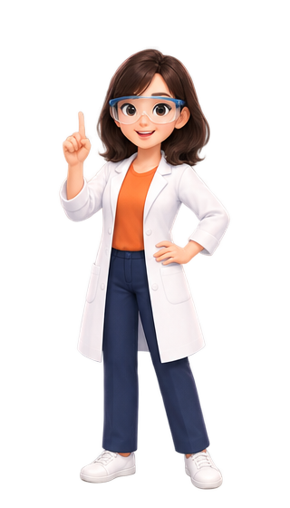

地球的大氣

🌍 大氣層：圍在地球外面的一層空氣
圍繞著地球周圍的空氣稱為大氣層，宛如覆蓋在地球表面上的一層淡藍色薄紗。
🌐 大氣層
圍繞著地球的空氣。它沒有一個清楚的「天花板」，越往上越稀薄，慢慢過渡到太空；常把約 100 km 當作太空的邊界。
🧲 地球引力
空氣分子受到地球引力拉住，才不會跑進太空。所以大部分的氣體集中在靠近地表的地方。
🎈 氣壓
氣壓是頭上那一整柱空氣的重量壓出來的。空氣柱的上方氣壓小、下方氣壓大。
🌍 互動：頭上的空氣柱
每個點代表等量的空氣。拉動探測線（或直接點畫布），看看在不同高度，頭上還壓著多少空氣、氣壓有多大。
| 地方 | 高度（約） | 氣壓（約） | 相當於海平面的 |
|---|---|---|---|
| 海平面 | 0 km | 1013 hPa | 100 % |
| 玉山山頂 | 3.95 km | 620 hPa | 約 61 % |
| 聖母峰山頂 | 8.85 km | 315 hPa | 約 31 %（不到 1/3） |
| 長程客機 | 11 km | 227 hPa | 約 22 % |
| 氣象氣球最高 | 30 km | 12 hPa | 約 1 % |
⚖️ 空氣真的有重量嗎？
空氣看不見、摸不到，可是它也是物質，有質量，也有重量。用電子秤就能秤出來。
⚖️ 實驗台：空氣有重量嗎？
把籃球放上電子秤，再用打氣筒打進 12 下空氣，看看讀數會不會變。

📓 我的觀察紀錄
🎓 資優補充：氣壓與空氣
氣壓的單位
- 1 大氣壓（1 atm）＝1013.25 hPa（百帕）＝101325 Pa ≈ 76 cmHg（760 mmHg）
- 也就是每 1 cm² 約承受 1.03 公斤重；天氣預報用 hPa
氣壓怎麼來的
- 氣體分子不停亂跑、撞到物體表面，這些撞擊加起來就是壓力
- 撞擊朝各個方向都有，所以壓力沒有「方向性」，會向四面八方作用
為什麼沒被壓扁
- 身體裡的體液與肺裡的空氣，壓力和外面差不多，內外互相抵消
- 上高山耳朵悶、洋芋片袋子鼓起來：外面氣壓變小，裡面還是原來的壓力
越高越稀
- 每往上約 5.5 km，氣壓大約減半；31 km 以下就裝了 99 % 的空氣
- 聖母峰頂的空氣只有海平面的約 1/3，登山者要背氧氣瓶
💨 氣體：固定成分 vs 變動成分
大氣的成分很複雜。含量最多的氣體是氮氣，其次是氧氣，第三是氬。依照「比例會不會變」，可以分成兩群。
🔒 固定成分（固定氣體）
- 組成：氮氣、氧氣、氬
- 含量較多
- 比例不會隨地點或季節有明顯的變化
- 不影響天氣變化
🔀 變動成分（變動氣體）
- 組成：水氣、二氧化碳、臭氧等
- 含量較少
- 比例會隨地點或季節有明顯的變化
- 會影響天氣變化
🧪 互動：一萬個點的空氣
把空氣想成一萬個分子點：數一數每種氣體有幾個，拉動水氣滑桿看看哪些點會變，再把少得可憐的二氧化碳找出來。
| 氣體 | 每一萬個點（乾空氣） | 約佔 | 類型 |
|---|---|---|---|
| 氮氣 N2 | 7808 | 78 % | 固定 |
| 氧氣 O2 | 2095 | 21 % | 固定 |
| 氬 Ar | 93 | 不到 1 % | 固定 |
| 二氧化碳 CO2 | 4 | 約 0.04 % | 變動 |
| 水氣 H2O | 0～400（隨天氣變） | 約 0～4 % | 變動 |
🌫️ 氣體以外：懸浮水滴、冰晶和固體微粒
💧 懸浮水滴、🧊 冰晶
小水滴和小冰晶飄在空中，聚在一起就是雲。
🌾 固體微粒
像塵埃、花粉，也包括煙塵。它們很小很輕，可以在空氣中飄很久。
🎓 資優補充：空氣的成分
氬從哪裡來
- 空氣中的氬，幾乎都是地殼裡的鉀-40 慢慢衰變出來的（氬-40）
- 氬幾乎不和任何東西反應，所以越積越多，成為第三多的氣體
二氧化碳在增加
- 二氧化碳約 0.04 %（約 420 ppm），而且因為燃燒煤、石油等燃料，逐年增加
- 含量雖少，卻是植物光合作用的原料，也會影響地球的溫度
潮濕的空氣比較輕
- 水分子（質量 18）比氮分子（28）、氧分子（32）輕
- 所以同樣體積時，潮濕的空氣反而比乾燥的空氣輕
其他微量氣體
- 氖、氦、甲烷、氫等微量氣體，在一萬個點裡加起來還不到 1 個點
- 臭氧也是變動成分，含量更少，但上層的臭氧會保護我們（分頁三）
🧱 依溫度變化，把大氣分成四層
大氣層依垂直方向的溫度變化，由下往上分成四層：對流層、平流層、中氣層、增溫層。高度是教學用的簡化數字，所以寫「約」。
對流層
- 空氣產生對流現象
- 溫度變化：遞減
- 水氣集中，產生天氣現象
平流層
- 含臭氧，吸收紫外線
- 溫度變化：遞增
- 20～30 km 臭氧最濃；長程客機常飛在底部
中氣層
- 空氣非常稀薄
- 溫度變化：遞減
- 中氣層頂是大氣最冷處，約 −90 °C
增溫層
- 空氣更稀薄，不到大氣總量的十萬分之一
- 溫度變化：遞增
- 極光大多發生在這一層
🌡️ 互動：氣溫隨高度怎麼變？
大氣依「溫度隨高度的變化」分成四層。拖曳曲線上的亮點（或用滑桿、按鈕）看各高度的氣溫與氣壓；切換模式看臭氧層怎麼吸收紫外線、天氣為什麼只在對流層。
🎓 資優補充：大氣的構造
真實的高度
- 對流層的頂端因緯度和季節而不同：兩極約 8 km、赤道約 16～18 km，平均約 11 km，所以 10 km 是簡化
- 溫度真正的轉折點大約在 11 km、47～51 km 和 85 km 附近
平流層為什麼很穩定
- 上面暖、下面冷，暖空氣在上，不容易上下對流，所以客機飛在底部比較平穩
- 火山灰和汙染物送到這一層，會停留很久
臭氧層怎麼來的
- 紫外線把氧分子（O2）拆開，單獨的氧原子再和 O2 結合成臭氧（O3）
- 臭氧吸收紫外線，把能量變成熱，平流層才會隨高度變暖
高層大氣的現象
- 流星多在約 60～100 km 的高度和空氣摩擦燃燒發光
- 國際太空站在約 400 km 的高度，就在增溫層裡
每升高 1 km 降多少度
- 在對流層裡，每升高 1 km，氣溫平均降低約 6.5 °C
- 這就是為什麼山頂比山腳冷、高山上有積雪
🛡️ 大氣保護了地球上的生物
🫁 氧氣供呼吸
氧氣可提供生物呼吸，產生活動需要的能量。
🌱 二氧化碳供光合作用
二氧化碳提供植物行光合作用，產生養分。
☄️ 減緩撞擊
大氣層可以減緩外太空物體（例如隕石）的直接撞擊，大部分在空中就燒光了。
☂️ 擋住有害射線
減少有害射線（例如紫外線）照射地表，保護地表的生物和環境。
🛡️ 互動：有大氣 vs 沒有大氣
左右兩邊落下同一組隕石、照到同一道陽光：左邊有大氣，右邊沒有大氣（像月球）。切換四種情況，比比看大氣怎麼保護地球。
🏭 空氣汙染：我們自己弄髒的空氣
空氣中若含有過多的懸浮微粒、煙塵、有毒氣體和惡臭氣體時，稱為空氣汙染。你是否看過汽車排放廢氣、塑膠工廠大火濃煙密布的畫面？
| 汙染物 | 主要來源 |
|---|---|
| 懸浮微粒 | 燃燒產生的濃煙，汽機車、工廠排放的煙塵；有時也來自火山灰和沙塵暴 |
| 一氧化碳（CO） | 汽機車、工廠燃料燃燒不完全 |
| 二氧化硫（SO2） | 燃燒含硫的煤和石油（工廠、發電）；火山噴發 |
| 氮氧化物（NOx） | 汽機車、工廠的高溫燃燒 |
| 臭氧（O3） | 廢氣中也有；注意：高空的臭氧是保護，地面附近的臭氧是汙染物 |
🏙️ 互動：空氣汙染城市沙盒
拉動工廠排放和車流量，或按下火山噴發、沙塵暴、下雨，看看天空、遠山和右上角的空氣品質指標（AQI）怎麼變；工廠排放多的時候下雨，會變成酸雨。
🌋 火山灰
火山噴發把大量火山灰送上天空，可能影響飛航安全，甚至擋住陽光使地球溫度下降。
🌪️ 沙塵暴
臺灣在冬末春初容易受沙塵暴影響：來自大陸北方的冷空氣夾帶大量沙塵吹到臺灣，空氣中懸浮大量細小微粒，能見度降低。
📊 空氣品質指標 AQI
環境部依照當日空氣中各種汙染物的濃度，算出空氣品質指標（AQI），用六種顏色告訴大家今天的空氣好不好。環境部在各地設有空氣品質監測網。
🌧️ 酸雨：空氣汙染會「下」下來
空氣中的二氧化硫、氮氧化物等氣體溶於雨水中，會形成酸雨。酸雨會影響植物生長，腐蝕戶外的雕像、建築物和橋梁，造成安全危害。
🧪 實驗台：酸雨是怎麼來的？
在燃燒匙裡燒硫粉，把產生的煙關進 A 瓶，再搖一搖，看看 BTB 指示劑的顏色怎麼變；B 瓶只有空氣，是對照組。
📓 我的觀察紀錄
🎓 資優補充：保護與汙染
酸雨的酸度
- 正常的雨水因為溶有二氧化碳，pH 約 5.6，本來就偏酸；pH 小於 5.6 才稱為酸雨
- 二氧化硫會變成亞硫酸、再氧化成硫酸；氮氧化物會變成硝酸
雕像為什麼會被腐蝕
- 大理石和石灰岩的主要成分是碳酸鈣，遇到酸會分解，表面變得斑駁、失去細節
- 橋梁和建築裡的鋼筋也會被酸雨加速生鏽
PM10 與 PM2.5
- 懸浮微粒依粒徑分類：直徑 10 微米以下是 PM10、2.5 微米以下是 PM2.5
- PM2.5 約只有一根頭髮粗細的 1/30，能深入肺的深處，對健康影響更大
臭氧的兩張臉
- 平流層的臭氧擋紫外線；靠近地面的臭氧是汙染物，會刺激呼吸道
- 冷媒等人造的氟氯碳化物會破壞臭氧層，後來國際上已限制使用
怎麼保護自己
- 出門前看 AQI：數字高時減少戶外劇烈運動，必要時戴合適的口罩
- 一氧化碳會搶走血液裡運送氧氣的血紅素位置，所以室內燒瓦斯、烤火要注意通風